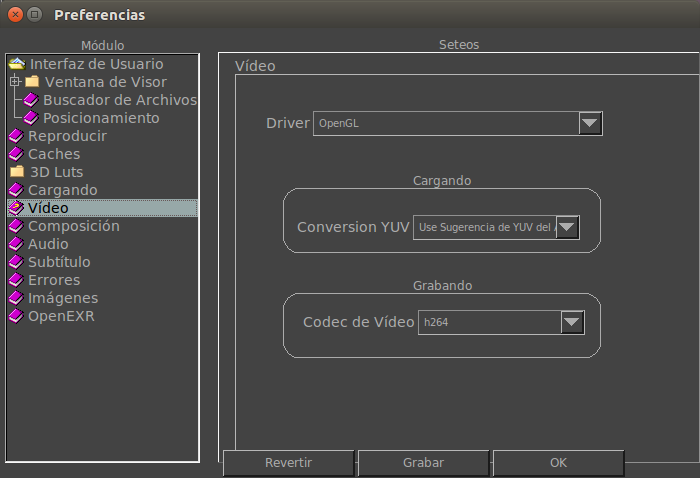

|  |
Aquí puedes cambiar el driver por defecto cuando mrViewer arranca. Por ahora, el unico driver es OpenGL. Cargando
Por defecto, mrViewer selecciona la conversion de YUV a RGB del archivo de la película a reproducir si esta está disponible. Cuando se ve videos BT709, los niveles de negro son más altos. Para prevenir esto, usted puede forzar a que todas las películas se vean con una cierta fórmula para convertir de YUV a RGB. Esto es lo que aquí selecciona. Grabando
Aquí puede seleccionar el codec por defecto que mrViewer usará cuando se graba una película. |